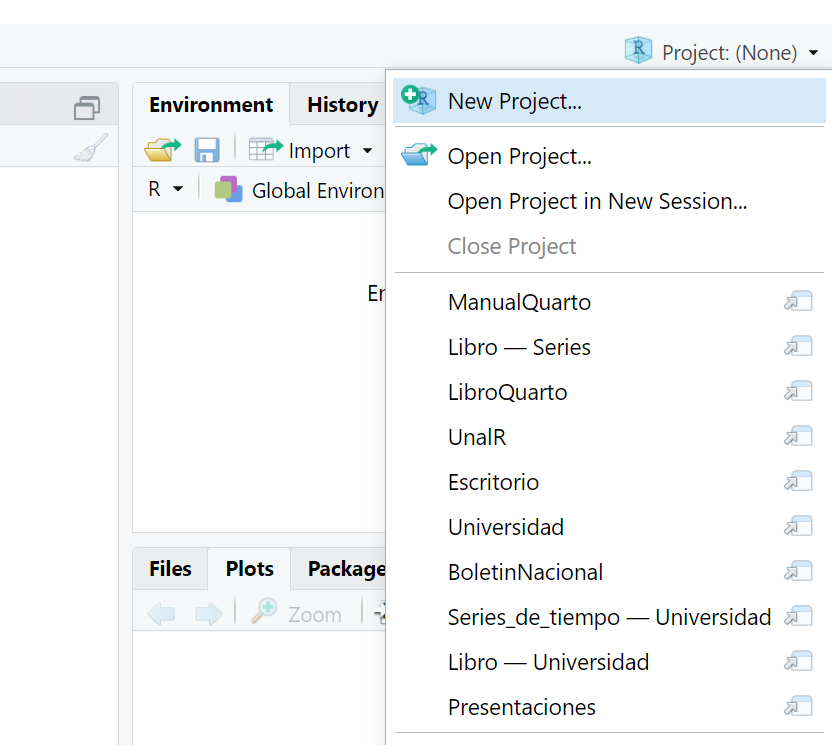
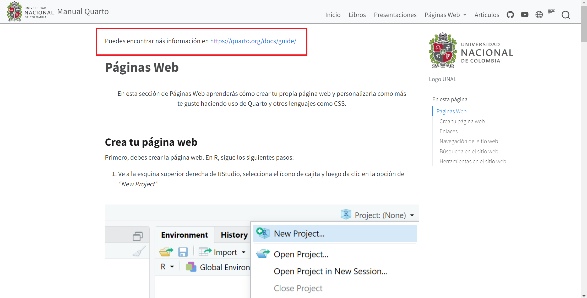
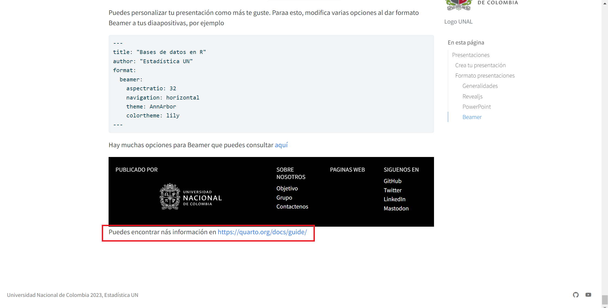
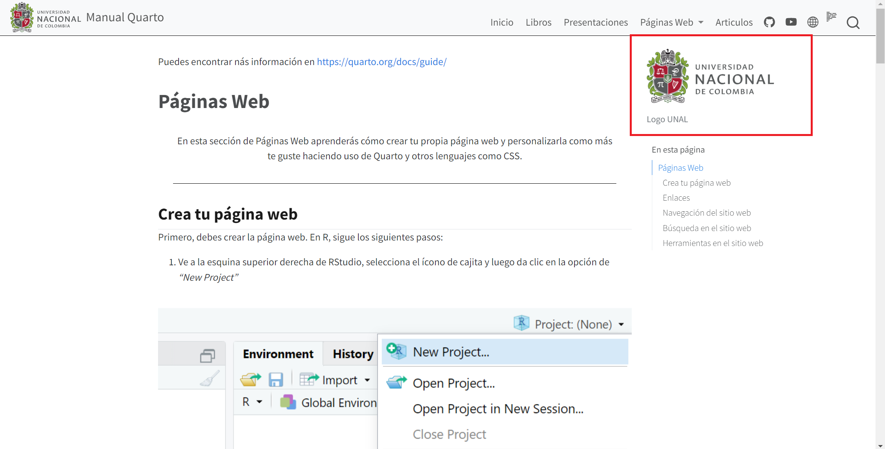
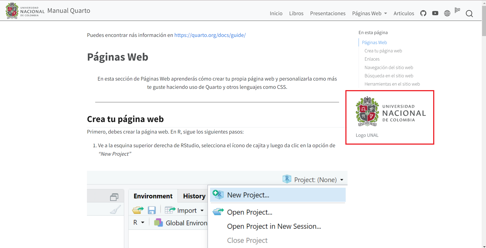
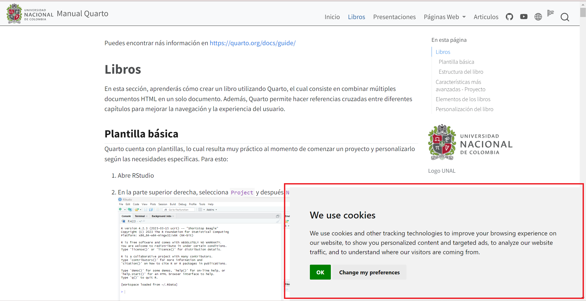
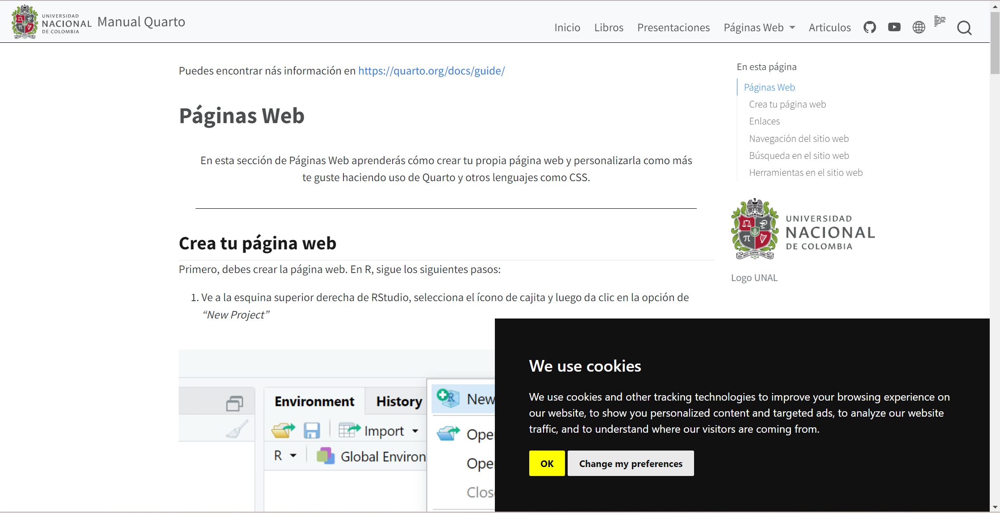
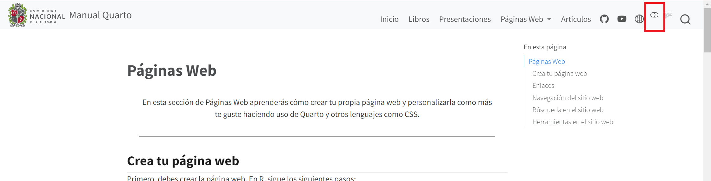
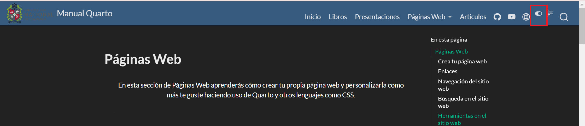

En esta sección de Páginas Web aprenderás cómo crear tu propia página web y personalizarla como más te guste haciendo uso de Quarto y otros lenguajes como CSS.
Crea tu página web
Primero, debes crear la página web. En R, sigue los siguientes pasos:
Ve a la esquina superior derecha de RStudio, selecciona el ícono de cajita y luego da clic en la opción de “New Project”

Selecciona la opción “Quarto Website”
Llena las opciones que aparezcan en la ventana emergente automáticamente
4. Da clic en “Render” y echa un vistazo a la primera versión (y al primer acercamiento) de tu página Web.
Cuando creas una página web con Quarto, por defecto se crea un archivo llamado _quarto.yml donde se especifican ciertas opciones del sitio web y puedes predeterminar ciertas características que desees en los HTML. Más adelante aprenderás cómo modificar este archivo para crear lo que tú quieras.
Para un primer acercamiento, si quieres modificar el idioma de tu página web, puedes hacerlo agregando la opción lang: en el _quarto.yml y en nuestro caso (español) lang: es. Si no te gustan las traducciones que se hacen por defecto, puedes agregar un archivo _language.yml donde puedes especificar las traducciones que desees, por ejemplo
toc-title-document: "Tabla de contenido"toc-title-website: "En esta página"
Enlaces
Para agregar enlaces dentro de tu página web, y puedes especificarlos en .html o directamente con .qmd, la ventaja de incluir enlaces de esta última forma es que si en algún momento quieres convertir tu página en un libro, los enlaces se adaptarán automáticamente. Si quieres saber más sobre libros en Quarto, visita aquí
[lo que quieres que aparezca en la página](nombre_archivo.qmd)[lo que quieres que aparezca en la página](nombre_archivo.qmd#seccion_referencia)
Navegación del sitio web
Navegación superior
Cuando hablamos de navegación superior, hacemos referencia a la “barra” superior que aparecen en la mayoría de páginas web que permiten organizar la información del sitio y facilitan la navegación del usuario. Agregar esta barra en Quarto es muy sencillo, simplemente agrega la opción navbar en el documeto _quarto.yml, y dentro de esta opción puedes indicar qué elementos quieres que aparezcan y en qué posición. Por ejemplo, está página web en la que lees este documento, en la parte superior izquierda tiene el logo de la universidad y en la parte superior derecha tiene todos los documentos de creaciones en R, el código para crear esto es
Más a detalle, con logo agregamos el escudo de la Universidad Nacional de Colombia en la parte superior izquierda y solo fue necesario indicar la dirección del archivo. Con search permitimos que la página incluya la opción de búsqueda para facilitar la navegación del usuario en el sitio web. La opción right especifica que lo que indiquemos a continuación debe estar en la parte superior derecha, con text detallamos el texto que se mostrará en la barra para el documento que especificamos en file. icon muestra el “logo” de cierta aplicación o página y con href precisamos el link a donde queremos que se dirija el usuario cuando de clic en dichos íconos. FALTA pinned y collapse.
Navegación lateral
Ahora, para la navegación lateral, debes reemplazar navbar por sidebar, además, ten en cuenta que la navegación lateral resulta muy útil cuando tienes demasiados documentos referentes a un tema, por lo que es necesario organizar dichos documentos en secciones. Por ejemplo,
Como vimos anterirormente, cuando tienes muchos documentos se hace necesario clasificarlos y organizarlos, cuando hacemos referencia a la navegación híbrida, hablamos de que hay demasiados documentos, por lo que puedes crear secciones con navbar y más subsecciones con sidebar además de agregar la opción sidebar: true en cada documento que permite que estos también estén organizados. En nuestro ejemplo,
Quarto te da la posibilidad de agregar un “botón emergente” que permite que el usuario vuelva a la parte superior de la página en la que está navegando, para ello solo debes agregar la opción back-to-top-navigation: true
Pie de página
Para agregar un pie de página con información sobre tu contacto, o en general cualquier información que quieras dejar disponible en todas las páginas de tu sitio web, puedes emplear la opción page-footer. Puedes poner algo sencillo en el pie de página e incluso especificar qué irá en el centro, a la derecha y a la izquierda, así como también si quieres que aparezca con borde (border: true) y el color de fondo (background: black). Por ejemplo,
website: page-footer: "Universidad Nacional de Colombia 2023, Estadística UN"
Recuerda que si quieres personalizar más este pie de página, puedes utilizar lenguaje HTML, puedes encontrar más información aquí
Esconder barra de navegación
En algunas páginas resulta muy útil esconder la barra de navegación, por ejemplo en la página de inicio. Para esto, especifica en dicha página lo siguiente
---sidebar: false---
navbar: false
Modo lector
Si quieres permitir que el lector de tu sitio web tenga la opción de “esconder” y no visualizar el “En esta página”, basta con la opción reader-mode: true, también puedes especificarlo para cierta página en específico.
Búsqueda
Puedes agregar una “lupa” que deje a tus lectores buscar en tu sitio web, escriben una palabra y se busca en todos las páginas de tu sitio.
website: navbar: search: true # Todo lo demás
Si quieres deshabilitar esta opción entonces simplemente usa search: false, si deseas que solo sea para una sección de tu sitio web, entonces
---title: seccionsearch: false---
Búsqueda en el sitio web
Apariencia
Quarto permite que incluyas la opción para que el lector de tu sitio web pueda buscar más facilmente en TODAS las páginas que dispongas en tu sitio, para ello, utiliza la opción search y ajustala como más desees con las opciones location y type.
Opción
Descripción
location
Especificamos si queremos navbar o sidebar
type
Con overlay aparece un pop up, con textbox no
limit
Número de resultados que deseas que aparezcan en el cuadro al hacer la búsqueda
collapse-after
Número de secciones que coinciden con la búsqueda y deseas que aparezcan en el cuadro
copy-button
Cuando es true aparece un icono que da la opción al usuario de copiar la URL de lo que está buscando
Puedes agregar texto e imagenes en el encabeza y/o en el pie de página de tu sitio web, de tal forma que aparezca en todos o en una sola de las pestañas de tu sitio. Para ello utiliza las opciones body-header, body-footer, margin-header, margin-footer, por ejemplo
website: body-header: | Puedes encontrar nás información en <https://quarto.org/docs/guide/> margin-header: | 

website: body-footer: | Puedes encontrar nás información en <https://quarto.org/docs/guide/> margin-header: | 

website: body-header: | Puedes encontrar nás información en <https://quarto.org/docs/guide/> margin-header: | 

website: body-header: | Puedes encontrar nás información en <https://quarto.org/docs/guide/> margin-footer: | 

favicon
Con la opción favicon puedes proporcionar un ícono para tus sitio web en la pestaña del navegador, solo debes especificar la dirección de la imagen que deseas que aparezca
Con Quarto puedes permitir que el usuario acepte o rechace las cookies de tu sitio (si las tiene). Con Google Analítico se pueden vincular directamente las preferencias de cookies del lector, si esta opción no está habilitada, entonces puedes personalizar el formato del consentimiento.
Opción
Descripción
type
Con implied se notifica al usuario que el sitio tiene cookies y le permite aceptar, rechazar y/o modificar sus preferencias. Con express se notifica al usuario que el sitio tiene cookies, pero no puede continuar visitando el sitio hasta que las acepte
style
simple, headline, interstitial, standalone
palette
light, dark
policy-url
La URL donde se encuentran las políticas de privacidad de tu sitio web
prefs-text
El texto que se muestra para personalizar la preferencia de cookies
Cookies por defecto:
website: cookie-consent: true

Ejemplo usando las opciones de la tabla:
website: cookie-consent: type: express style: interstitial palette: dark
website: cookie-consent: type: implied style: simple palette: dark

Aperiencia (modo)
Con Quarto puedes implementar un “interruptor” que permita al usuario modificar la visualización de tu sitio web, ya sea que desee el modo claro o el modo oscuro. Para ello
format: html: theme: light: cosmo dark: darkly


Recuerda que puedes elegir el tema que desees para cada modo, los temas disponibles los puedes encontrar aquí